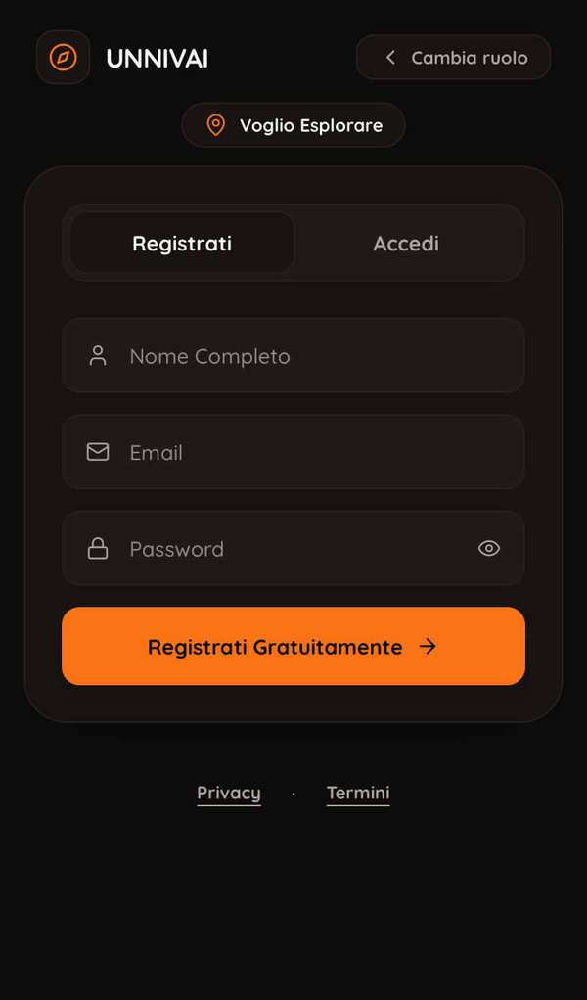
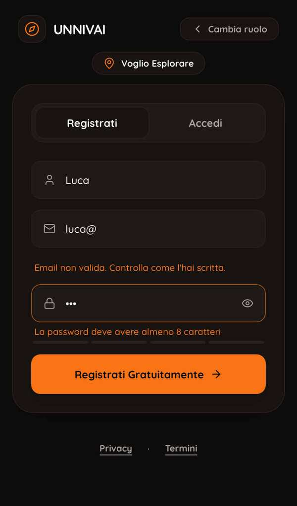
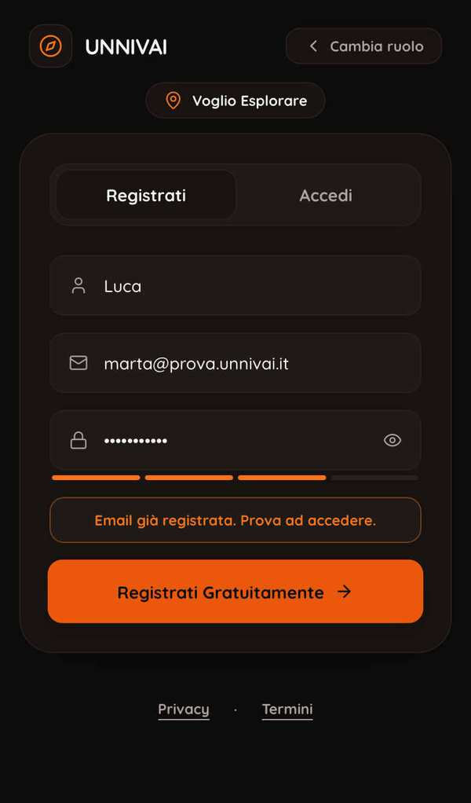
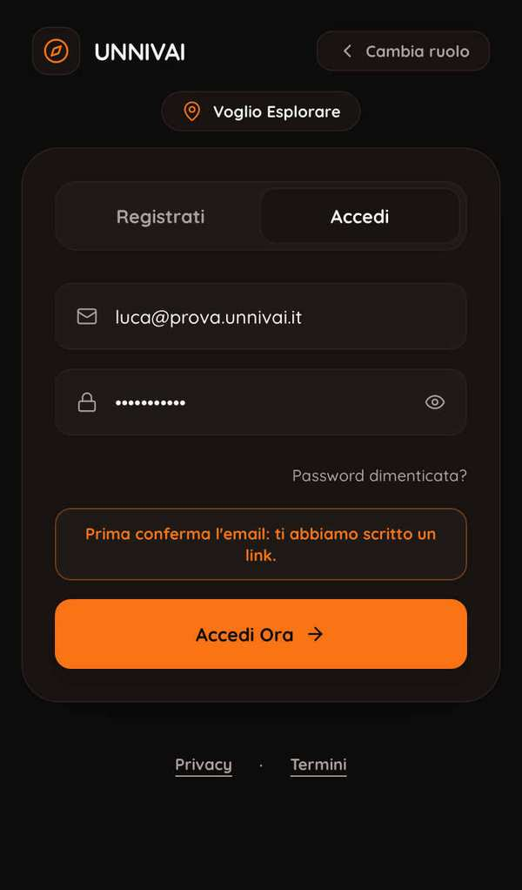
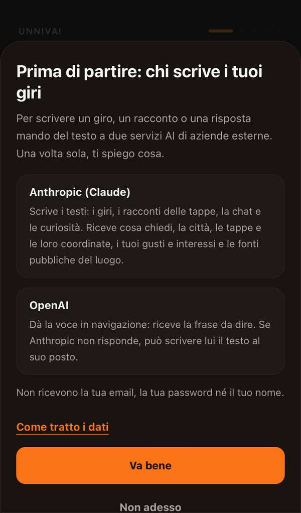
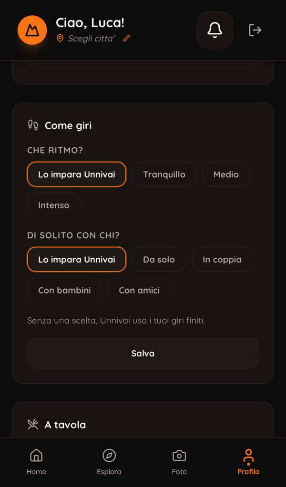
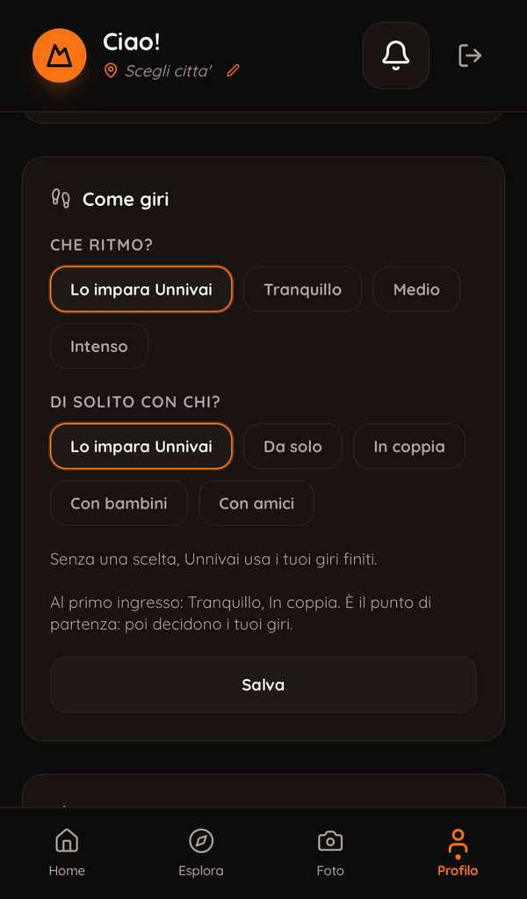

01 Utente nuovo con email
prima
Un passo in più («Scegli come vivere l'esperienza», un solo ruolo); regole della password solo dopo l'errore; conferma con link: oggi la mail parte solo verso il team (2 l'ora), chi si registra resta su «Controlla la tua Email!» senza poterla farsi rimandare; il consenso si apre SOPRA il primo ingresso e «Non adesso» esce dallo schermo; gli interessi sono obbligatori; passo e compagnia non si chiedono.








dopo
Email → codice di 6 cifre → dentro: niente password, niente link. Primo ingresso: consenso, poi tre domande brevi (interessi, a tavola, come giri), ognuna saltabile, tasti sempre in vista. Il Profilo mostra «Al primo ingresso: Tranquillo, In coppia».


